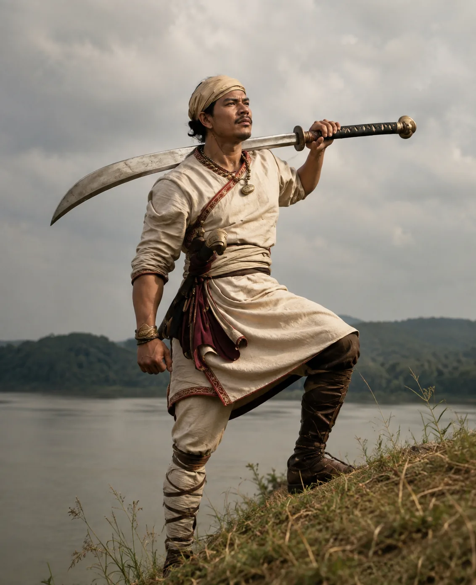

Portrait of Lachit Borphukan
1671 · Against the Mughal Empire

Regal portrait of the legendary Ahom generalissimo Lachit Borphukan, victor of the epic Battle of Saraighat.
Sources have not yet been catalogued for this record.
1671 · Against the Mughal Empire

Regal portrait of the legendary Ahom generalissimo Lachit Borphukan, victor of the epic Battle of Saraighat.
Sources have not yet been catalogued for this record.